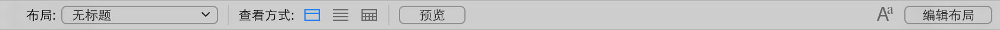

在布局模式或浏览模式下，该区域显示用于设置文本和对象的格式的选项。要显示或隐藏格式栏，请在布局栏中单击"格式  "。
"。
A
ActiveX Automation
一种 Windows 编程和脚本协议，该协议允许对 FileMaker Pro Advanced 中的特定命令和操作进行外部控制，包括打开和关闭 FileMaker Pro Advanced 文件、转换应用程序的可视性以及执行 FileMaker Pro Advanced 脚本。
Alpha 通道
图像的 alpha 通道存储透明度信息，并控制红色、绿色和蓝色通道的透明度。
API（应用程序编程接口）
程序员所使用的一套软件应用程序构造块，例如数据结构、变量、过程和函数。
Apple 事件
一种 macOS 技术，该技术使得应用程序间可以相互通信。FileMaker Pro Advanced 可以将 Apple 事件发送至支持这些事件的应用程序，或者也可以从那些应用程序收到该事件。
AppleScript
一种脚本语言，您可以使用该语言控制 macOS 以及支持 AppleScript 的应用程序（通常称为具有脚本功能的应用程序）中的各种函数。
ASCII 字符集
美国信息交换标准码。全球计算机系统使用的一种标准字符集（经常被扩展成不同的字母表）。
安全性
置于文件中的保护。安全性包括各种类型的帐户（用于验证用户）、权限集级别（用于确定可通过文件进行的操作），以及其他文件创建当前文件的参考（包括其表、布局、脚本和值列表）的授权。安全性还包括扩展权限，用于确定权限集所允许的数据共享选项。
按钮
在浏览或查找模式下执行指定脚本的布局对象。
按钮栏
在水平或垂直栏中显示按钮或弹出框按钮的布局对象。按钮栏包含段，段代表个别按钮，由按钮图标和文本标签的任意组合构成。
B
绑定密钥
链接 Runtime 解决方案的组件，且字符长度范围为 1 到 24 的区分大小写密钥。
报表布局
一种用于设置报表的预定义布局类型。您可以仅使用数行和数列数据（在列表中时）来创建简单布局，或使用分组数据（子摘要报表）来创建复杂报表。您指定按列显示的字段将跨屏幕或页面排成一行。字段名位于页首部分，页脚部分为空白。
备份
如果原始文件丢失、损坏或无法检索时可以使用的文件副本。
本地通知
在同一设备上发送和传送的通知。即使 FileMaker 客户端不在前台，本地通知也会显示。
变量
在计算中表示值的符号或名称。使用某些脚本步骤，如设置变量或 Let 等函数，以指定变量的名称、值和重复。以 $ 为前缀的名称是本地变量，仅在当前脚本中可用。可以给名称加上前缀 $$，使其在当前文件各处都可用（全局）。本地和全局变量可能会使用同样的名称，但会被认为是不同的变量。函数变量没有前缀。
标记
一个图标，表示已应用到字段、对象或布局的条件格式化、脚本触发器、占位符文本或工具提示；表示可对字段进行查找；表示对象是按钮、弹出框按钮或按钮栏；表示解决方案是个人收藏解决方案。
标签布局
一种预定义的布局，字段按照在邮件标签存储，以及媒体和索引单上水平或垂直打印的方式排列。
标准表单布局
默认的布局，其所有字段都按定义的顺序排列在不同的行中。此布局的正文部分仅为可包括文件中所有字段所需的高度。这一布局包括页首部分和页脚部分。
表
与某一主题（如客户或股票价格）相关的数据集合。每个数据库中都包含一个或多个表，表中则包含字段和记录。创建新表时，该表的一个可视化表示形式（或称表摹本）会出现在关系图中。您可以指定同一个表的多个表摹本（各自带有唯一名称），以便在图中处理复杂关系。
表达式
一个值或者任何可以生成值的计算。表达式可以包含函数、字段值、变量和常量。表达式可以组合以产生其他表达式。
表单视图
一次显示一条记录。默认情况下，字段会显示在单独的行中。要选择此视图，请单击布局栏中的"表单视图"。
表摹本
在关系图中，位于单个基础源表中的独立视图。
表视图
在类似电子表格的列表格式中显示多条记录。每条记录都按行出现，每个字段都按列出现。要选择此视图，请单击布局栏中的"表视图"。
在浏览模式下，您可以使用"表视图"创建、修改和删除字段；选择字段类型；添加、删除和排序记录；或者创建图表或动态报表。
补充字段
FileMaker Pro Advanced 计算字段或合计字段，可以追加至 ODBC 表，以便在使用 FileMaker Pro Advanced 的同时对外部数据进行计算。这些计算不会存储，且您也不会更改 ODBC 表的架构。
布尔值
布尔值为真 (True) 或假 (False)。包含除零以外的任何数字的字段将解析为真 (True)。包含零或没有数据的字段，或者是其内容不能转换成数字的字段则解析为假 (False)。例如，包含"ABC"、"ABC0"的字段，或空白字段为假 (False)。包含"1"或"ABC2"的字段为真 (True)。
布局
字段、对象、图片和布局部分的排列形式，它表示在您浏览、预览或打印记录时信息的组织和显示方式。可以针对输入数据、打印报表和邮件标签、显示 Web 页等操作设计不同的布局。
布局背景
最底层的布局。您可以更改背景的外观 - 例如，使用图像或渐变 - 仅在布局部分（布局背景上方）透明时显示。
布局部分
布局中用于组织或汇总信息的部分。布局部分包括正文、页眉、页脚、标题页眉、标题页脚、顶部导航、底部导航、前置和后置总计以及前置和后置小计。
布局工具
布局模式下的状态工具栏中的工具集合，其中包括选择工具（指针）、文本工具、线工具、矩形工具、圆角矩形工具、椭圆形工具、字段/控件工具、按钮工具、弹出框按钮工具、按钮栏工具、选项卡控件工具、滑动控件工具、入口工具、图表工具、Web 查看器工具、字段工具、部分工具和格式刷工具。
布局栏
在状态工具栏中，该区域显示用于处理布局的选项，如"布局"弹出菜单。
浏览模式下的布局栏 |
 |
布局模式下的布局栏 |
布局类型
FileMaker Pro Advanced 提供多种预定义的布局和报表类型，可在多种类型的设备（例如笔记本屏幕或触摸式设备屏幕）上显示，同时可用于不同用途（例如浏览记录，输入数据或打印报表、邮件标签或信封）。选择布局类型后，您可以进行其他选择。
要使用预定义的布局类型，在布局模式下，请单击状态工具栏中的"新建布局/报表"。助手会全程指导您创建所需的布局或报表类型。在完成助手后，请使用布局模式下的工具和命令按照您的需要定制布局。
布局模式
FileMaker Pro Advanced 的一种模式，在此模式下您可以决定字段信息如何在屏幕及打印报表中显示。
（使用浏览模式输入并编辑信息；使用布局模式设计信息的显示方式。使用查找模式查找与搜索条件匹配的记录；使用预览模式显示记录的打印方式。
"布局"弹出菜单
在布局栏中，可以从弹出菜单中选择"管理布局"（布局模式）或一个已定义的布局（所有模式）。
布局主题
一组经过协调的样式，用于确定布局上使用的颜色、对象、部分和背景属性以及字体。主题还会改善布局或报表的显示，并为您的布局提供一致外观。主题并不控制布局上字段或对象的位置或行为。当您创建新布局时会分配主题，但您可在布局模式下更改主题。您还可通过更改用于布局的样式，然后使用新名称保存主题来创建主题。
部分标签
在布局模式下，出现在每个布局部分底部分界线左侧或旁边的标签。通过上下拖动这一标签，您可以用它调整布局部分的大小。您还可以通过双击此标签，打开"部分定义"对话框。
C
菜单
多个菜单项的列表。每个菜单都在菜单栏上有自己的标题。
菜单集
安装在菜单栏上的菜单集合。
菜单栏
窗口 (Windows) 或屏幕 (macOS) 顶部的区域，该区域显示了安装的菜单集。
菜单项
列在菜单栏上的菜单中的一个项目。一个菜单项就相当于一条命令、一个子菜单或分隔符。
菜单项属性
菜单项的所有设置，包括平台、显示标题、快捷方式和操作。
参考线
不可打印，但是可以上下左右移动的指示线，帮助您在布局模式下定位和对齐对象。对象的左边界或右边界，上边界或下边界，或中心与参考线"对齐"。
操作数
公式的组件。例如，在数量*价格这个公式中，数量和价格都是操作数。
层叠样式表
一种代码和标记系统，该系统定义了 Web 浏览器如何在 Web 页上显示信息。层叠样式表与 HTML 相比，提供了更丰富的 Web 页布局和外观控件。层叠样式表就像是 Web 页的模板。如果 Web 页包含层叠样式表，用户就必须使用支持层叠样式表的浏览器查看这个页面。
插件
通过 FileMaker Pro Advanced 外部计算函数和外部脚本步骤扩展 FileMaker Pro Advanced 功能的第三方软件组件。
查询
通过发送 SQL 语句检索、处理或修改来自数据源的数据。而且，还可以向 DBMS 请求数据，然后从 DBMS 接收数据。您也可以使用查询对您的数据执行添加、编辑、格式化、排序以及计算等操作。
查找
查找操作首先找到匹配的记录，然后从相关表中将数据拷贝至当前表的字段中。数据拷贝过来之后，将成为当前表的一部分（同时也在原始表中存在）。当相关表中的数据值更改时，拷贝到表中的数据不会自动更改。
查找模式
FileMaker Pro Advanced 的一种模式，在此模式下您可以指定条件查找记录子集。
（使用浏览模式输入并编辑信息；使用布局模式设计信息的显示方式。使用查找模式查找与搜索条件匹配的记录；使用预览模式显示记录的打印方式。
查找目标字段
您希望在查找时将数据拷贝到其中的字段。
查找请求
查找模式下基于当前布局的空白表单。在一个或多个查找请求字段中输入搜索条件。
查找源字段
包含您希望在查找时拷贝的数据的相关表字段。
常数
公式中的不变值。例如，常数可以是一个字段名、文本文字（"总计："）或一个数字。在不同的记录中使用公式解析时，常数的值都不会改变。
重复性导入
将一个文件设置为自动从另一个文件导入只读数据的方法。如果使用重复性导入，当您打开文件，在 FileMaker Pro Advanced 会话期间第一次查看包含导入的数据的布局，或者运行数据更新脚本时，导入的数据会自动刷新。
重复字段
包含多个独立值的字段。
初始 App
用于跟踪多个相关项目并且适合在创建第一个定制化 App 时作为开始的预定义 App 类别。您可以将初始 App 与附加表相结合，对其进行扩展。
创建窗口
一个窗口，您可以在其中初始 App 或空白文件创建定制化 App，转换先前版本的文件，了解如何创建定制化 App。
D
DTD（文档类型定义）
对特定类型的 XML 的正式描述。它定义了文档的结构，包括数据元素的名称以及它们将在结构中出现的位置。有效的 XML 会遵从其 DTD 中制定的规则。
带分组数据的报表
使用"报表"布局类型创建的小计报表。带分组数据的报表可以包括多个总计和小计。
导出
保存文件中的数据，以便可以在另一个文件或另一个应用程序中使用。
导航部分
在标题页眉部分之上（顶部导航部分）或在标题页脚部分（底部导航部分）之下显示的布局部分，可以包含字段、对象和其他控件来帮助用户浏览布局或解决方案。导航部分不能打印或预览。
导入
将数据从表、另一个文件或其他应用程序带入（拷贝）到当前表中。您也可以在 FileMaker Pro Advanced 文件中导入另一个FileMaker Pro Advanced 文件的脚本。
地理围栏
地理位置周围的虚拟边界。
递归脚本
可以调用自身的脚本。
定制化 App
一个文件或一组文件，包含数据库表、布局、脚本和关联的数据。定制化 App 执行一个或多个特定任务，例如，跟踪客户或发货单。有时称为解决方案。
动画
一种可视效果，当您在 FileMaker Pro Advanced 和 FileMaker Go 中执行诸如在滑动面板之间切换的操作时提供反馈。
动态参考线
在布局模式下，水平和垂直伸展的参考线可以帮助您移动、对齐对象或调整对象的大小。当您移动、调整对象的大小或对齐对象时，动态参考线也可以与对象的上下边界和中心"对齐"。
度量单位
在浏览和布局模式下，您可以将度量单位设置为磅、英寸或厘米。
段
按钮栏对象的组件。每个段可定义为按钮或弹出框按钮。
堆迭顺序
对象在布局中的重叠顺序。在布局模式下，可以在检查器中或"对象"选项卡中更改此顺序。
对话框窗口
处于模式状态下的文档窗口。其行为与暂停运行的脚本时的窗口行为相似。您可以使用"新建窗口"脚本步骤创建和自定义对话框窗口。
对象
在 FileMaker Pro Advanced 布局上，对象是可以选择、移动、修改、删除或命名的独立实体或形状。线、字段、按钮、弹出框、面板空间、入口、导入图形、文本块、选项卡控件以及 Web 查看器均为对象。有些对象（如入口）具有多个组件；例如，入口行是入口的一个组件。
对象窗格
在布局模式下，包含"字段"选项卡和"对象"选项卡的窗格。要打开对象窗格，请单击状态工具栏中的 。或选择"查看"菜单 >"对象">"字段选项卡"或"对象选项卡"。
对象选项卡
在布局模式下对象窗格中的一个选项卡，可在其中查看布局中所有对象的层次列表；选择、隐藏和命名对象；以及更改堆迭顺序。要打开"对象"选项卡，请单击状态工具栏中的 ，然后单击"对象"。或选择"查看"菜单 >"对象">"对象选项卡"。
对象组件
对象的元素，例如入口的入口行或滑动控件的滑动面板。
多对多关系
数据库表中数据间的对应关系，其中，第一个表中有多条记录与另一个表中的多条记录相关，而另一个表中也有多条记录与第一个表中的多条记录相关。
多键字段
包含多个值的匹配字段，每个值都在不同的行中。多键字段可以用在一个涉及某种关系的表中，以便匹配其他表的匹配字段中多个可能的值。有时称为复杂键字段。
F
FileMaker Cloud for AWS
一种服务，可在云中为使用 FileMaker Pro Advanced、FileMaker Go 和 FileMaker WebDirect 的定制化 App 提供访问权限。FileMaker Cloud for AWS 在 Amazon Web Services (AWS) Cloud 上运行，通过 AWS Marketplace 提供。
FileMaker Go
允许您在 iPhone、iPod touch 或 iPad 上使用 FileMaker Pro Advanced 解决方案（在 FileMaker Pro Advanced 开发）的应用程序。
FileMaker Network
一种通信方法，允许您通过网络与使用 FileMaker Pro Advanced 或 FileMaker Go 的其他人共享 FileMaker Server、FileMaker Cloud for AWS 或 FileMaker Pro Advanced 托管的文件。您设置的 FileMaker Network 设置和权限将决定其他用户（也称为"客户端"）打开和使用共享文件的方式。
FileMaker WebDirect
一种 Web 应用程序，用于在 Web 浏览器中访问文件中的布局。Web 客户端使用 FileMaker WebDirect 访问由 FileMaker Server 或 FileMaker Cloud for AWS 托管的文件中的布局。
防火墙
用于防止未经授权的用户访问 LAN 的安全系统。防火墙通常设置在一台连接至 Internet 的计算机上，所有 Internet 流量都必须经过该计算机。
访问键 (Windows)
当与 ALT 键一起使用时可以激活菜单、菜单项或控件的按键。在 Windows 中，这个键与菜单、命令或对话框选项中的下划线字符对应。
访问权限
查看特定记录、字段、布局、值列表和脚本并处理它们的权限，以及执行文件中选定活动的权限。
分隔符
菜单中的线，用于分隔或分组菜单项。分隔符也可以是字符，用于分隔日期、时间或数值的各部分，或者是用于分隔函数定义中各参数的分号 (;)。
浮动文档窗口
当用户在 FileMaker Pro Advanced 中工作时，在其他窗口上面的标准无模式 FileMaker Pro Advanced 窗口。您可以使用"新建窗口"脚本步骤创建和自定义浮动窗口。
辅助文件
在 Runtime 解决方案中，与主文件捆绑在一起的文件。
父脚本
一种定义了脚本参数并且可以调用其他脚本的脚本。
附加表
一种表类别，其中包含一组可添加到定制化 App 以跟踪每条记录的多个项目实例的字段。例如，添加到"联系人"App 的邮件地址附加表可跟踪每个联系人的多个电子邮件地址。
G
GIF（图形交换格式）
一种常用于在 Internet 上分发图形的平台无关的文件格式。
Guest
无需指定帐户名和密码，就可以打开受保护文件的用户。Guest 帐户分配有一个权限集，用来决定来宾可以在文件中进行哪些操作。可以禁止 Guest 帐户访问某个文件。
高级工具
FileMaker Pro Advanced 开发和部署了在选择了"使用高级工具"常规首选项时可用的功能（例如脚本调试器、自定义菜单和数据库加密）。
高速缓存
程序保留的 RAM（随机访问内存）区域，用于存储常用的数据、提供比从硬盘读取数据更快的访问速度。高速缓存容量越大，FileMaker Pro Advanced 性能越好。高速缓存容量越小，在硬盘中保存数据就越频繁，但如果出现系统崩溃，则能提供更好的保护。
格式栏
在布局模式或浏览模式下，该区域显示用于设置文本和对象的格式的选项。要显示或隐藏格式栏，请在布局栏中单击"格式 "。
布局模式下的格式栏 |
个人收藏窗口
一个窗口，您可以在其中查看、添加、删除和重新排序收藏文件。
工具提示
当用户将光标悬停在布局对象上方时显示的小文本框。工具提示会在浏览、查找和布局模式下显示。
公式
一组用于计算值的指令。
共享 ID
链接多文件解决方案中的加密文件，且字符长度范围为 1 到 32 的区分大小写的 ID。
共享文件
启用了共享的文件，用户可以通过网络访问该文件。FileMaker Server、FileMaker Cloud for AWS 和 FileMaker Pro Advanced 每个版本都支持以下的一种或多种文件共享方式：FileMaker Network 共享，此方式允许多个 FileMaker Pro Advanced 或 FileMaker Go 用户同时使用文件；向 Web 浏览器用户提供通过 FileMaker WebDirect、自定义 Web 发布或 FileMaker Data API 进行发布的文件；通过 ODBC/JDBC 与其他应用程序共享数据。
关系
关系提供从一张表到另一张表的数据访问。关系可以将一个表中的一条记录与另一个表中的一条记录、一条记录与多条其他记录或一个表中的所有记录与另一个表中的所有记录联在一起，这根据您在关系图中创建关系时指定的条件决定。
关系数据库
一个包含一个或多个数据库的组，当这些数据库一起使用时包含您需要的所有数据。每个数据摹本每次只存储在一个表中，但可以从任意表中访问，不论是在同一个文件中还是从相关文件中。来自于其他表或文件的数据未经拷贝直接显示在当前表中，只要另一个表或者文件中的值发生变化，该数据也会随之改变。
关系图
在"管理数据库"对话框的"关系"选项卡中，您可以看到一些表摹本，它们来自于当前的文件和任何外部相关的文件。在这个关系图中，您可以将表联接在一起并改变来自于不同表的字段间的关系。
创建新表时，该表的一个可视化表示形式（或称表摹本）会出现在关系图中。您可以指定同一个表的多个摹本（各自带有唯一名称），以便在图中处理复杂关系。
H
HTML（超文本标记语言）
用于显示和访问万维网信息的语言。
HTTP（超文本传输协议）
定义了 Web 服务器如何响应文件请求的 Internet 协议。
函数
一种预定义的指定公式，用来执行特定计算并返回一个特定值。
函数变量
一个变量，其范围仅限于函数。无前缀的函数变量（例如变量）。
函数列表分隔符
一种标点字符 ; （分号），用来分隔函数定义中的参数。如果您键入逗号 (,)，FileMaker Pro Advanced 会在您关闭"指定计算方式"对话框之后将其改为分号。
合并变量
在布局上插入的变量，用于将局部或全局变量的值显示在当前记录的布局上。在浏览、查找和预览模式下以及在打印记录时，您会看到合并变量值。
合并字段
布局上代表字段内容的占位符。在浏览和预览模式下，或者在打印时，合并字段都会扩展或收缩以便让每条记录都符合字段中的数据量。
合并字段对于邮件合并表单字符非常有用；FileMaker Pro Advanced 在预定义的标签和信封布局中使用合并字段。
合计字段
包含跨记录组计算得出的合计结果值的字段。
滑动控件
由一个或多个滑动面板组成的布局对象，您可以使用它组织每个滑动面板边框内的字段和其他对象。
浏览模式下的滑动控件 |
滑动面板
滑动控件的组件。滑动面板就是当选定滑动控件中的一个点时显示的区域。您可以在滑动面板中放入对象（如线、字段、按钮、入口、导入图片、文本块、选项卡控件、滑动控件以及 Web 查看器）。
滑块
状态工具栏中的导航控件，您可以使用该控件基于记录在文件中的位置快速移动至文件中的该记录。在浏览模式下，移动滑块将改变当前记录。在查找模式下，移动滑块将改变当前的查找请求。在布局模式下，移动滑块将改变当前布局。在预览模式下，移动滑块将改变当前页。
恢复
如果文件损坏（例如，由于在硬盘更新期间意外退出），可以尝试恢复文件。FileMaker Pro Advanced 会保存尽量多的数据（文件的架构和结构，及其表格、记录、布局、脚本和字段定义）。
活动面板
"脚本工作区"中可供使用的面板（脚本面板、脚本编辑面板或脚本步骤面板）。
活动选项卡
"脚本工作区"中可供使用的脚本编辑面板中的选项卡。
I
iBeacon
一个传输蓝牙低能量信号的设备，iOS 设备可以检测该信号并确定位置及与 iBeacon 的接近程序。
Internet
由使用 TCP/IP 网络协议的众多其他网络链接组成的国际网络。
Internet 服务提供商 (ISP)
您可以向其购买 Internet 连接的公司。
Intranet
在公司或组织内部由多台计算机连成的专用 TCP/IP 网络。
IP（Internet 协议）地址
IPv4 地址是由四个部分组成的号码，通常格式为 12.34.56.78，它可以在 Internet 中唯一标识计算机；IPv6 地址是由八个部分组成的号码，通常格式为 [2001:0DB8:85A3:08D3:1319:8A2E:0370:7334]，它可以在 Internet 中唯一标识计算机。在应用程序中引用时，IPv6 地址必须括在方括号中，例如 [2001:0DB8:85A3:08D3:1319:8A2E:0370:7334]。
J
JDBC
使用 SQL 语句与多种数据库管理系统进行访问数据、交换数据操作的 Java API。JDBC 驱动程序提供 Java applet 和 FileMaker Pro Advanced、FileMaker Server 或 FileMaker Cloud for AWS 数据源之间的通信。
JPEG（联合图像专家组）
一种常用于在 Internet 上分发图形的平台无关的文件格式。
JSON（JavaScript 对象表示法）
一种轻量级数据交换格式，多个 Web 服务使用此格式传输由名称-值对组成的数据对象。
基本目录
对于存储外部参考的容器字段来说，是指存储参考数据的文件夹。您也可以为每个开放存储容器字段指定文件系统路径或计算方式。
计算字段
会对这些值返回计算结果的字段。您可以使用函数、常数、运算符以及来自同一条记录中的其他字段信息创建一个公式进行计算。
记录
数据库表中的一个字段集。每条记录中包含一次活动、一个人、一个物品或一次交易的相关数据。
加密密码
打开加密文件所需的密码。对于 FileMaker Pro Advanced，FileMaker Pro Advanced 用户需要加密密码才可打开文件，但如果用户打开的文件是 FileMaker Pro Advanced 托管的文件，则不需要加密密码。需要 FileMaker Pro Advanced 来启用、禁用或更改加密密码。
架构
在数据库术语中，架构是指表格的组织、每个表格中的字段，以及字段与表格之间的关系。
剪贴板
计算机内存中的临时存储区域，FileMaker Pro Advanced 会在其中放置您最近剪切或拷贝的选定内容。
检查器
在布局模式下，允许您查看和编辑对象、布局部分和布局背景设置。要打开检查器，请单击状态工具栏中的  。或者选择"查看"菜单 >"检查器">"检查器"。
。或者选择"查看"菜单 >"检查器">"检查器"。
键
使特定行唯一的列（相当于一个匹配字段）。
降序顺序
文字按照字母的反向顺序（Z 至 A）排序，数字按照从大到小排序，日期和时间按照从晚到早排序。
交互容器
一个容器字段，在检查器中为其选择了"交互式内容"选项。交互容器通过 Web 查看器使用的 Web 浏览器技术呈现。
焦点
指示已通过单击、Tab 键、导航按钮或脚本激活的记录、入口行、选项卡、选项、字段、重复字段重复项、布局部分或布局对象随后可通过某些方式对其执行操作。例如，您可以更改具有焦点的字段中的值，可以处理具有焦点的记录中的数据，计算函数可以返回具有焦点的入口行的数目。
脚本
为了自动执行重复或难度大的任务而定义的一条或多条指令（脚本步骤）。您可以使用"脚本工作区"创建和管理脚本。您可以通过单击脚本按钮，从脚本菜单命令中选择脚本，从其他脚本或插件中调用脚本来运行脚本，或者也可以在启动或关闭文件时运行脚本。
脚本步骤
包含在脚本中的一条命令。
脚本触发器
一种在发生特定事件时启动指定脚本运行的机制。
脚本调试器
一种高级工具，用于调试 FileMaker Pro Advanced 脚本。
结构
在 FileMaker Pro Advanced 中，结构是指如脚本、布局、值列表和权限等文件元素的组织。您可以通过文件的结构与其架构交互。
解决方案
请参阅定制化 App。
"仅限于数据输入"权限集
出现在每个文件中的三个预定义权限集中的一个。"仅限于数据输入"权限集允许对文件中的记录进行读/写访问，但没有设计访问权限（例如，创建布局和值列表）。
局部变量
一种变量，只能用在当前脚本中。一种前缀为 $ 的局部变量（例如 $变量）。
K
Kiosk
以全屏运行且没有工具栏或菜单的 FileMaker 解决方案。用户单击按钮即可浏览。使用"开发工具"可以创建 Kiosk 解决方案。您可以将 Kiosk 解决方案绑定到独立的 Runtime 解决方案。
卡
一种窗口类型，属于其父窗口的模式窗口，可允许用户打开其他窗口或文件而无需先关闭卡片。使用"新建窗口"脚本步骤创建和自定义卡。
开发工具
一个高级工具，可以用于将文件绑定到 Runtime 解决方案中、以 Kiosk 模式显示文件、防止用户修改数据库的设计或结构，以及自动重命名文件集和更新相关到文件的链接。
克隆
包含所有字段定义、表、布局、脚本和页面设置选项，但是不包含任何数据的 FileMaker Pro Advanced 文件副本。
客户端
使用 FileMaker Go、FileMaker Pro Advanced、ODBC/JDBC 客户端应用程序或 Web 浏览器（仅托管在 FileMaker Server 或 FileMaker Cloud for AWS 上）打开与托管在 FileMaker Server、FileMaker Cloud for AWS 或 FileMaker Pro Advanced 上的数据库的连接的用户。FileMaker 客户端是指使用 FileMaker Go 或 FileMaker Pro Advanced 的用户。Web 发布客户端是指使用 FileMaker WebDirect、自定义 Web 发布或 FileMaker Data API 的用户。
客户端/服务器架构
两台共享资源的联网计算机之间的关系。客户端从服务器请求服务，服务器则向客户端提供服务。
客户端应用程序
从数据源（使用 ODBC 或 JDBC）请求数据（使用 SQL）的应用程序。当 FileMaker Pro Advanced 访问由 FileMaker Server 或 FileMaker Cloud for AWS 托管的文件时，它也是客户端应用程序。
空白布局
包含空白正文、页首和页脚部分的布局。
快捷菜单
用于快速编辑对象或数据，只需从快捷方式或上下文、菜单中选择命令。根据您使用的模式，光标所指向的项目以及是否选定该项目，这些命令都会有所不同。
要显示快捷菜单，请右键单击 (Windows) 或按住 Control 键并单击 (macOS) 项目。
快捷方式
也称为键盘快捷方式。就是用户按下就能执行任务的一个或多个键。
快速查找
在浏览模式下，跨布局上的多个字段搜索记录。
快照链接
以 FileMaker Pro 快照链接 (FMPSL) 格式保存，且文件扩展名为 .fmpsl 的记录搜索结果。快照链接捕获并保存您执行查找请求时的搜索结果。您还可以通过电子邮件将 FMPSL 文件发送给其他人。
扩展权限
决定文件的权限集所允许的数据共享和其他选项的权限。例如，"通过 FileMaker Network 访问 (fmapp)"扩展权限决定权限集是否允许通过 FileMaker Pro Advanced 和 FileMaker Go 客户端访问文件。
L
LAN（局域网）
在一个区域内使用有线或无线系统连接计算机。
列
在表视图中查看布局时，一列相当于一个字段。
列表视图
使用列表格式显示记录，每次显示一条记录。要选择此视图，请单击布局栏中的"列表视图"。
列表视图布局
一种报表布局类型，在此布局中，您可指定按列显示的字段跨屏幕或页面排成一行。字段名位于页首部分，页脚部分为空白。
浏览模式
FileMaker Pro Advanced 的一种模式，在此模式下您可以在字段中输入或编辑信息。文件记录由字段组构成。您可以每次查看一条记录（在布局栏中单击"表单视图"），也可以通过列表形式查看多条记录（单击"列表视图"），还可以通过类似电子表格的表查看排列其中的多条记录（单击"表视图"）。
（使用浏览模式输入并编辑信息；使用布局模式设计信息的显示方式。使用查找模式查找与搜索条件匹配的记录；使用预览模式显示记录的打印方式。
M
面板控件
面板控件包含选项卡控件和滑动控件。这些控件各自的面板分别为选项卡面板和滑动面板。
模板
一个预定义的 Web 网站，您可以在"Web 查看器设置"对话框中使用它来帮助您快速创建 Web 查看器。
模式
FileMaker Pro Advanced 中用于处理文件的四种不同的环境（浏览、查找、布局和预览）。
模式窗口
需要用户操作的窗口，用户执行操作后才能继续在 FileMaker Pro Advanced 中工作。模式窗口用于显示警报消息或收集用户的信息。
目标文件
在导入或导出期间将数据带入其中的文件。
N
内置滚动条
仅在滚动时才显示的滚动条。
O
OAuth 身份提供者
使用 OAuth 验证用户身份的一种服务。OAuth 是一个授权框架，允许第三方应用程序验证用户身份，而无需用户与第三方共享其凭据。
ODBC
使用 SQL 语句与多种数据库管理系统进行访问数据、交换数据操作的 API。FileMaker Pro Advanced 使用 ODBC 驱动程序共享数据（作为数据源），还可以使用它们与其他应用程序互动（作为客户端应用程序）。
P
PHP（PHP：超文本预处理器）
主要用于服务器端应用程序软件的开放源码编程语言，可以用来创建动态 Web 页。FileMaker Server 让您能够在使用 PHP 创建的自定义 Web 页上发布 FileMaker Pro Advanced 文件中的数据。
排序顺序
重新排列记录的顺序。记录首先按照排序顺序列表中的第一个字段进行排序，然后是第二个，以此类推。每个字段中的值都将按照指定的顺序排序（升序、降序或自定义）。
匹配字段
对于关系数据库和查找，匹配字段就是包含您要用来查找匹配记录的值的源表字段和相关表字段。（匹配字段有时也称为键字字段或触发字段。在关系图中，匹配字段以斜体显示。
对于导入记录，匹配字段中的值可以决定使用源表中的哪些记录更新目标表中的哪些记录。
屏幕模板
在布局模式下，帮助您为 iPad、iPhone、iPod touch 或不同屏幕分辨率的计算机设计布局的不可打印的参考线。
Q
启动脚本
当文件打开时自动运行的脚本。您可以将按照用户的格式设置系统格式或将文件设置为共享等此类操作编入启动脚本中。
在"文件选项"对话框中的 OnFirstWindowOpen 脚本触发器中指定启动脚本。
嵌入
对于容器字段，是指存储在容器字段中的文件。容器数据也可以通过参考存储或存储在外部。
驱动程序
ODBC 或 JDBC 驱动程序可将 SQL 查询转换成 DBMS 能够理解的命令。它能够处理 ODBC/JDBC 调用，将 SQL 请求提交给数据源，并将数据返回给驱动程序管理器，随后驱动程序管理器会将其发送至提出请求的应用程序（如 FileMaker Pro Advanced）。
驱动程序管理器
管理提出请求的应用程序与数据源之间的通信的控制面板。当应用程序通过 ODBC/JDBC 提出请求时，驱动程序管理器会将请求通过正确的驱动程序发送至正确的数据源，然后将数据返回至提出请求的应用程序。在计算机中使用的所有 ODBC/JDBC 驱动程序和数据源都已向驱动程序管理器注册。
全局变量
一种变量，可以用在该文件任意位置上的算式或脚本中，例如其他脚本或文件路径。在文件关闭前，全局变量的值不会被清除。一种前缀为 $$ 的全局变量（例如 $$变量）。
全局字段
使用全局存储选项定义的字段，该字段可以包含一个文件中所有记录都要用到的值。全局字段的值可以用作计算中的固定值，用来在 If 或 Loop 脚本步骤中定义变量，或者用在几乎不需要更新的字段中（例如，容器字段中的公司徽标）。全局字段可以是除合计字段外的任意字段类型。全局字段不能建立索引。
权限集
定义的权限集，用于决定文件的访问级别。您可以根据需要在文件中定义无限多个权限集。有三种预定义的权限集：完全访问权限、仅限于数据输入和只读访问权限。
R
Runtime 解决方案
无需 FileMaker Pro Advanced 就可使用的解决方案。使用"开发工具"可以绑定主文件和任何辅助文件，以生成独立的 Runtime 解决方案。
容器数据类型
图片、影片和文档（例如 Microsoft Word 文件和 PDF 文件）可插入到容器字段中。容器字段中的数据可嵌入在字段中、通过文件参考存储或存储在外部。
入口
一个布局对象，显示来自相关表或当前表中记录的行中的数据。
S
SQL
一种能够控制 DBMS 并与其交互的结构化编程查询语言。
上下文
计算和脚本从其开始的表摹本以及关系图中关系的解析来源的表摹本。
升序顺序
文字按照字母顺序（A 至 Z）排序，数字按照从小到大排序，日期和时间按照从早到晚排序。
省略记录
临时从搜索结果中排除（但未从文件中排除）的记录。您可以通过选择"记录"菜单 >"只显示省略内容"查看省略记录，或通过选择"记录"菜单 >"显示所有记录"将省略记录添加回搜索结果中。
时间戳
一种结合了日期和时间的字段类型，它与 ODBC 要求的 SQL 格式 [yyyy.mm.dd hh:mm:ss.sss] 兼容。
示例 App
针对在 iPad、iPhone、桌面或 Web 上管理常见业务任务自定义的经专业设计的 FileMaker Pro Advanced 文件类别。
视图
对数据进行的预先排列，有助于在屏幕上处理数据。在浏览模式、查找模式或预览模式下，"表单视图"将逐条显示记录，"列表视图"将在列表中显示记录，"表视图"将会使用类似电子表格的表格式显示记录。
手柄
出现在选定对象周围的小方块，用于调整对象大小和改造对象的外形。
授权
允许文件访问受保护文件的架构（包括其表、布局、脚本和值列表）。这类文件是已授权文件。
数据查看器
一个高级工具，可以用于监视表达式，例如字段值、本地和全局变量以及计算。可以在运行脚本或在"脚本调试器"中测试脚本时监视表达式。您还可以监视文件中的字段值和变量。
数据点
图表中，绘制在 x 或 y 轴上的数据值显示为柱状图、条形图、点数图、气泡图或扇形图。
数据库
表和字段的排列方式以及它们在文件中的关系。
数据库管理系统 (DBMS)
允许用户存储、处理和检索数据库中信息的应用程序
数据库加密
一种保护"静止数据"的加密形式。对于 FileMaker，静止数据是 FileMaker Pro Advanced 文件，当静止数据存储在磁盘（未开放）上时，则为临时文件。使用加密密码防止对加密文件进行未授权的访问。需要 FileMaker Pro Advanced 对文件进行加密。可以根据需要对加密文件进行解密和重新加密。
数据库设计报表
用来创建数据库架构报表的高级工具。
数据库文件
FileMaker Pro Advanced 定制化 App 的一个组件。
数据文件
可结合创建数据文件、写入数据文件以及读取数据文件脚本步骤使用的文件。
数据系列
绘制在图表中的数据点。在图表中绘制多个数据系列时，每个数据系列都用唯一的颜色显示，并在图表的图例中定义（如果包括）。
数据源
提供对其他 FileMaker Pro Advanced 文件或 ODBC 数据库的访问权限的指定参考。ODBC 数据源也称为外部 SQL 源 (ESS)。
绘制图表时，要绘制的数据的来源 - 当前搜索结果、当前记录（分隔数据）或相关记录。
数据源名 (DSN)
包含特定文件相关信息的数据结构，ODBC 驱动程序需要使用该文件与其连接。
搜索结果
搜索数据时激活的表中的记录集。当您找到所有记录后，搜索结果就是整个表。
搜索条件
在查找模式下，为找到记录而指定的值和运算符。例如，如果在"卖家"字段中输入"ABC 旅游"，FileMaker Pro Advanced 将会在"卖家"字段中查找并返回具有这个名称的所有记录。
索引
可以在定义（或更改）字段定义时启用的一个选项。当索引功能启用后，FileMaker Pro Advanced 将会生成一个包含出现在表字段中的所有值的列表。这可提高任务（如查找数据）的执行性能，但也会增加文件在磁盘中的存储大小。
锁定的对象
布局中无法编辑或删除的对象。要锁定或解锁对象，请在布局模式下选择该对象。在检查器中，单击"定位" 选项卡，然后在"排列和对齐"区域中选择"锁定"或"解锁"。对象被锁定后，其选择手柄会变暗。
选项卡，然后在"排列和对齐"区域中选择"锁定"或"解锁"。对象被锁定后，其选择手柄会变暗。
T
Tab 键顺序
在记录中的字段间移动的顺序。在布局模式下，您可以定义一个自定义 Tab 键顺序并在其中包括按钮、面板控件以及 Web 查看器的顺序。
TCP/IP（传输控制协议/网络协议）
作为 Internet 基础的基本通信协议。
弹出框
一种布局对象，可以包含其他布局对象。弹出框包含对象所在的内容区域，且可包含标题。您可以通过单击弹出框按钮来打开弹出框。根据需要可以在屏幕上对弹出框进行重定位以保持处于视图中。
弹出框按钮
一种打开弹出框的布局对象。
提交
将更改保存到文件中。某些特定的操作（如在记录间导航、查找和排序）都不会改变文件的修改日期。其他操作（如更改记录中的数据或更改布局）则会改变文件的修改日期。
条件字段
在小计部分中，记录将根据值在另一个字段中分组（排序），该字段称为条件字段。只要条件字段中的值更改，报表就会"中断"，此时 FileMaker Pro Advanced 将插入小计部分。
图表
一种图形描述，使比较数据和查看图案及趋势变得很容易。
图表图例
用于标识分配给图表中数据系列的颜色的图例。
U
Unicode
一种全球标准，在一个代码页中为每一种人类语言字符提供一个唯一编码，不区分平台、软件程序或操作系统。
URL（统一资源定位器）
由协议、主机名和可选的端口、目录以及文件名组成的 Web 地址。例如，https://www.filemaker.com/cn、ftp://12.34.56.78:80/myfiles/ 或 fmp://mywebsite.com/sample.fmp12。
W
Web 查看器
一种布局对象，允许您根据文件中的数据显示网站中的信息。
Web 地址
在"Web 查看器设置"对话框中输入的计算表达式。Web 地址并不等同于 Web 用户在 Web 浏览器中输入的 URL。
Web 服务器
与 Internet 或 Intranet 连接并安装了 Web 服务器应用程序的计算机。Web 服务器应用程序会将 Web 页和相关文件发送给 Web 浏览器。
Web 浏览器
可以用来查看万维网或 Intranet 中的 Web 页/网站的应用程序。浏览器会将 Web 页下载到查看者的计算机中。
Web 页
一种在 Internet 或 Intranet 上显示的 HTML 文档。
Web 用户
使用 Web 浏览器访问发布在万维网或 Intranet 上的 FileMaker Pro Advanced 文件的人。
外部脚
由一个文件使用但在另一个文件中定义的脚本。使用"执行脚本"脚本步骤从相关文件中选择一个已定义的脚本，或者在您的硬盘或网络中选择一个文件的文件参考。
外键
在关系数据库中，表中标识另一个表中记录的字段。外键中的值不必在表中唯一，可以为空 (Null)。一个表中可以有多个外键。
"完全访问权限"权限集
出现在每个文件中的三个预定义权限集中的一个。"完全访问权限"权限集允许对文件进行所有读/写访问，包括更改文件的权限。
完全限定名称
字段或布局的完整名称，使用"表名::[字段或布局名称]"的格式表示，其中"表名"是出现在关系图中的字段或布局的基础表摹本的名称。完全限定名称代表字段或布局的具体实例。因为具有常用名的字段和布局可能会基于不同的表，FileMaker Pro Advanced 使用完全限定名称以避免计算和脚本出错。
万维网
可以通过 URL 获得，并且相互链接在一起的位于不同 Web 服务器中的 Web 页，以及其他文档、菜单和文件的集合。
网格
布局模式下，一系列不可打印的相交的水平和垂直线。网络用于对齐您创建、调整大小、移动或定位的对象。对象"对齐"到网格，帮助您更精确地创建和编辑对象。当您更改测量单位时，网格线将进行调整。
网站
通过链接连接的一个或多个 Web 页，显示在 Internet 或 Intranet 上。
未存储的计算
其结果仅在需要值时才计算出来的计算字段，例如，要浏览或打印。多数情况下，FileMaker Pro Advanced 会在定义字段时将字段设为存储，但您可以将存储类型改为不存储。
文本表达式
会返回文本结果的表达式。例如，文本表达式可以是一个常数（"伦敦"）、一个字段参考（状态）或一个计算值（Rightwords（姓;1））。
文本基线
在布局模式下，基于字段或文本块中的文本底部显示的指示线。文本基线可以是实线、虚线或点状线。如果您希望在浏览和查找模式下也显示文本基线，请在检查器的"外观  "选项卡中选择"文本基线"。
"选项卡中选择"文本基线"。
文档窗口
标准无模式 FileMaker Pro Advanced 窗口。您可以使用"新建窗口"脚本步骤创建和自定义文档窗口。
文件 ID
也称为文件标识。数据文件的数字标识符。
文件路径
文件在操作系统中的位置，由驱动器、文件夹、文件名和文件扩展名共同表示。
问题
在"脚本工作区"中，在脚本中找到的错误、省略或其他不准确性。
X
X 轴数据
柱状图、堆叠柱状图、折线图和面积图中您要比较的数据系列（例如，公司名）。
条形图或堆叠条形图中您要测量的数据系列（例如，年销售额）。
XML（可扩展标记语言）
XML 不是一种固定的文件格式，而是一种用于定义协定格式的语言，以方便组成员交换数据。许多组织和商业都使用 XML 传输产品信息、交易、库存和其他商业数据。
FileMaker Pro Advanced 可以导出 XML 数据，然后提供给以下程序使用，例如，电子表格应用程序、数据图表应用程序以及企业的 SQL 数据库。FileMaker Pro Advanced 也可以导入 XML 数据。
XSLT（可扩展样式表语言转换）
XSLT（XSL 转换）是 XSL（可扩展样式表语言）的子集，用于转换或更改 XML 文档的结构，使其变为另一种文档格式。例如，您可以使用 XSLT 样式表将 XML 文档转换为 HTML 或 TXT 文档。
系统格式
用于确定您的操作系统如何显示和排序日期、时间、数值和货币的设置。
如果您计算机中的系统格式与创建文件的计算机中的系统格式不一样，则当第一次打开文件时，FileMaker Pro Advanced 会询问您是要使用系统的设置还是文件的设置。设置字段格式时，可以使用"检查器"让数据根据当前系统格式来显示。
下拉日历
一个专门设置的字段，当用户在浏览或查找模式下进入该字段时将显示交互式日历。
相关表
对于关系数据库，是包含您希望在当前表中访问并处理的数据的表。对于查找，是包含要拷贝的数据的表。
相关记录
相关表中的记录，它的匹配字段（根据所使用的关系决定）中包含与另一个表中的匹配字段中的值相等的值。
相关字段
对于关系数据库，相关字段就是表中与另一个表的字段相关的字段（或者是与同一个表中的不同字段相关的字段）。如果在两张表之间定义了关系，那么就可以从一张表访问另一张表中的字段数据（即使关系还通过其他表）。
小计部分
使用合计部分可以查看并显示一条或多条记录信息。您在合计部分中添置一个合计字段，就可以显示在条件字段中排序的每一组记录的合计信息。您可以在正文上（前置）或正文下（后置）添加一个或多个小计部分。
小计值
字段中不同类别数据的聚合值。例如，小计值可以是每个部门的员工总数。
"新建布局/报表"助手
新布局/报表助手全程指导您根据您的选项创建布局或报表。在布局模式下，单击状态工具栏中的"新建布局/报表"，或选择"布局"菜单 >"新建布局/报表"。
信封布局
字段按照打印标准商业信封的方式排列的一种预定义布局。
行
在表视图中查看布局时，一列相当于一个记录。
序列号
FileMaker Pro Advanced 为每条记录输入的唯一编号。您可以在"字段选项"对话框中设置"自动输入"选项，让 FileMaker Pro Advanced 自动为每条记录输入序列号。您还可以通过在浏览模式下选择"记录"菜单 >"替换字段内容"为记录提供序列号。
选定选项卡
"脚本工作区"中位于前景中的选项卡，可在其中创建或编辑脚本。
选项卡控件
由一个或多个选项卡面板组成的布局对象，您可以使用它组织每个选项卡面板边框内的字段和其他对象。
浏览模式下的选项卡控件和选项卡面板 |
选项卡面板
选项卡控件的组件。选项卡面板就是当选定选项卡控件中的一个选项卡时显示的区域。您可以在选项卡面板中放入对象（如线、字段、按钮、入口、导入图片、文本块、选项卡控件、滑动控件以及 Web 查看器）。
Y
Y 轴数据
柱状图、堆叠柱状图、折线图和面积图中您要测量的数据系列（例如，年销售额）。
条形图或堆叠条形图中您要比较的数据系列（例如，公司名）。
验证
在分配权限并允许访问系统或文件之前，检查帐户和密码（如果定义了密码）有效性的过程。
样式
属性（如字体、颜色、线条样式和文本对齐方式）的集合，用于确定布局的外观。
页脚部分
页脚部分用于显示页号或日期。这个部分显示在每个屏幕或页面的底部（除非您添加了标题页脚）。布局中只可以有一个页脚。页脚中会有一个字段显示该页最后一条记录的数据。
页首部分
页首部分可以用作列标题、标题以及其他只出现在布局中每页顶部的信息。FileMaker Pro Advanced 在浏览模式下会显示页首，并且将其打印在每一页上，如果您添加了标题页首则第一页除外。添加到页首中的字段将打印到每一页上，使用该页第一条记录中的数据。
一对多关系
数据库表中数据间的对应关系，其中，第一个表中的一条记录与另一个表中的多条记录相关。
一对一关系
数据库表中数据间的对应关系，其中，第一个表中的一条记录与另一个表中的一条记录相关。
一致性检查
一致性检查是对可能由于某些原因（如意外退出）而损坏的文件进行检查。FileMaker Pro Advanced 读取每个文件块并验证文件块的内部结构是否有效以及文件块是否正确链接到文件中的其他块。（一致性检查不会读取每个文件块中的所有数据，也不会检查文件中的架构或高级别结构；这些任务均由文件恢复来执行。）
以太网
一种快速的局域网，用于在同一个建筑内或校区内连接计算机和外部设备。
隐藏的编辑框
通过设置为显示圆点来替换数据以隐藏机密信息的字段。
语法
对正式语言的精确说明，例如 XML，它由许多规则组成，针对的是如何生成该语言中的字符串（单词），以及如何将这些字符串重新组织成语言的一部分。
预览模式
FileMaker Pro Advanced 的一种模式，在此模式下您可以看到布局打印后的样子。
（使用浏览模式输入并编辑信息；使用布局模式设计信息的显示方式。使用查找模式查找与搜索条件匹配的记录；使用预览模式显示记录的打印方式。
域名
标识 Internet 上的计算机的名称。
域名服务器 (DNS)
与具有正确数值 IP 地址（例如 12.34.56.78）的网站 URL（例如 https://www.filemaker.com/cn）相匹配的服务器。
源表
关系图中一个或多个表摹本所基于的表。源表就是在"管理数据库"对话框的"表"选项卡中定义的表。
源文件
执行导入或导出操作时从中获取数据的文件，或者是其中的表被添加至关系图中的文件。
允许列表
在"首选项"对话框中，即使无法验证其安全性，用户也允许 FileMaker Pro Advanced 使用的主机和插件列表。
运算符
在计算中，表明两个或多个表达式之间的结合方式的符号。包括标准的算术运算符（+、-、/、*），设置必须达到的条件以便获得真 (True) 或假 (False) 值的逻辑运算符（AND、OR、XOR 和 NOT），以及帮助您限制在查找请求中定义的记录的查找运算符（<、=、@）。
在关系图中，用来定义两个表中的一对或多对字段间的匹配条件的符号。包括：!=（不等于）、>（大于）、<（小于）、=（等于）、<=（小于等于）、>=（大于等于）以及 x（所有行或笛卡尔积）。
Z
占位符文本
在字段内显示的字段标签的类型。占位符文本可以是字段名、其他文本（例如指示信息）或计算的结果。在布局模式下，占位符文本由字段上的"占位符文本"标记指示。
帐户
用户名和（通常）密码，用于标识用户。帐户在 FileMaker Pro Advanced 或外部创建（例如，在 Amazon OAuth 身份认证中心系统中创建）。帐户存在后，您可以为其分配访问权限，从而确定允许该帐户执行的任务。
帐户访问权限
具有权限集的用户帐户或群组。在"管理安全性"对话框中，您可以创建帐户访问权限条目。
正文部分
包含文件中各条记录的布局部分。
"只读访问权限"权限集
出现在每个文件中的三个预定义权限集中的一个。只读访问权限集允许对文件中的记录进行读访问，但是不能进行写或者设计访问。
直接对应关系
数据库表间的对应关系，其中有两个表直接相关，之间没有任何其他表。
值列表
为了节省时间并在输入数据时确保准确性，可以将经常使用的文本、数字、日期或时间的值定义为一个值列表。输入数据时，您可以从已定义的值列表中选择。
您可以将值列表的格式设置为下拉列表或弹出菜单，或者是复选框或选项（单选）按钮。值列表中的值可以为用户定义的值，也可以基于同一个文件或不同文件中的字段值。您可以定义关系配合值列表使用，或者用来访问和显示特定的相关值。还有一种选择就是使用其他文件的值列表。
主从布局
在一个区域中显示项目列表并在另一个区域中显示所选项目详细信息的布局。例如，在收件箱的电子邮件列表中，可以单击一个邮件以查看详细信息，例如日期、发件人和正文。
主机
FileMaker Server、FileMaker Cloud for AWS 和 FileMaker Pro Advanced 可以打开和共享一个文件供其他用户（客户端）访问。所有更改都将存储在该文件所驻留的计算机，并保存在原来的文件中。FileMaker Network 设置和权限确定 FileMaker 客户端与托管文件的交互方式。
主键
在关系数据库中，与所标识的记录在同一个表中的字段。主键值必须唯一并且不能为空（非 Null）。一个表中只有一个主键。
主文件
在 Runtime 解决方案中，连接所有辅助文件并在启用 Runtime 应用程序时打开的文件。从"开发工具"中，您可以为具有多个文件的解决方案选择主文件。
主页
网站的起始页。主页通常采用表的形式，查看者点击这些内容就可以链接至该网站的其他部分。
转换
使用另一个应用程序打开数据文件，新建一个包含该数据的 FileMaker Pro Advanced 文件。
也可以指打开使用先于 FileMaker Pro Advanced 或 FileMaker Pro 版本创建的文件。
状态工具栏
文档窗口顶部的区域，显示导航控件、可自定义按钮和用于处理布局的布局栏。布局模式中包含布局工具。
"浏览"模式下的状态工具栏 |
布局模式下的状态工具栏 |
如果未显示状态工具栏，请选择"查看"菜单 >"状态工具栏"。
子菜单
从另一个菜单项扩展出来的菜单。
子脚本
调用至另一个脚本的脚本。
字段
记录中数据的基本单位。您可以定义字段包含一个特定的离散类数据，例如姓、员工照片，也可以定义字段显示计算结果。您可以定义文本、数值、日期、时间、时间戳、容器、计算以及合计字段。字段也可以指布局中用于显示数据的对象，例如编辑框、复选框集或弹出菜单。
字段边界
布局模式下，显示字段大小的边线。要查看字段边界，选择"查看"菜单 >"显示">"字段边界"。这些边界仅出现在布局模式中。但是，您可以使用检查器的"外观 "选项卡设置对象的格式，使其具有能够在浏览模式下以及在打印布局时显示的边框。
字段标签
布局上或字段内用于标识字段的文本。字段标签可以是字段名称、其他文本（如说明）或计算结果。字段标签可以出现在字段外的各个位置，或显示为字段内的占位符文本。您可以在需要时更改或删除字段标签。
字段类型
字段定义的一部分，它决定您可以在字段中输入哪种数据类型，以及 FileMaker Pro Advanced 可以对数据执行哪种类型的操作。FileMaker Pro Advanced 可以创建文本、数值、日期、时间、时间戳、容器、计算以及合计字段。（对于文件中的所有记录，全局字段包含相同的值，它可以是除合计字段外的任意字段类型。）
字段名
定义字段时您为字段分配的名称。当您往布局中添置一个字段时，您可以让 FileMaker Pro Advanced 同时添加一个与字段名匹配的可编辑字段标签。您还可以使用字段名作为占位符文本。完全限定的字段按表名::字段名格式显示。
字段选项卡
在布局模式下对象窗格中的一个选项卡，可在其中创建字段并将字段拖到布局中。要打开"字段"选项卡，请单击状态工具栏中的 ，然后单击"字段"。或选择"查看"菜单 >"对象">"字段选项卡"。
字符编码
文件的字符集或代码页。如果需要，您可以指定进行文件导入、导出、索引、排序和拼写检查等操作时使用的字符集。FileMaker 支持 ASCII、Windows ANSI、Macintosh、日语 (Shift-JIS)、Unicode UTF-8、Unicode UTF-16 以及 Unicode UTF-16 Windows。
自定义菜单
不属于默认 FileMaker Pro Advanced 菜单之一的菜单。您可以创建自定义菜单、菜单项和菜单集。
自定义分隔值
文件中的字段值，用您指定的字符或其他分隔符分隔，例如制表符、逗号或分号。
自定义函数
不属于默认 FileMaker Pro Advanced 函数之一的函数。您可以创建在文件的任意位置都可重复使用的自定义函数。
自动调整对象
为了减除邻近字段中的输入项留下的间隙而移动到一起的对象。
在布局模式下设置自动调整（位于检查器的"定位" 选项卡的"自动调整和可见性"区域）。
自联接
同一个表中的字段间的关系。它会在关系图中为该表创建另一个摹本。
总计
搜索结果中的所有记录的总计值或其他聚合值。
总计部分
使用总计部分来查看和显示搜索结果中所有记录的合计字段的合计信息（总计值、平均值等）。您可以在布局的顶部（前置）和底部（后置）分别添加一个总计部分。
组合对象
在布局模式下如同一个对象的一组对象。
组合框
可以在布局模式下设置的一种列表。在检查器的"数据  "选项卡中，选择"包括箭头以显示和隐藏列表"。列表只会在用户单击箭头时打开，而不是在用户输入字段时打开。
"选项卡中，选择"包括箭头以显示和隐藏列表"。列表只会在用户单击箭头时打开，而不是在用户输入字段时打开。
最近窗口
一个窗口，显示您最近打开的文件。您可以删除最近的文件。